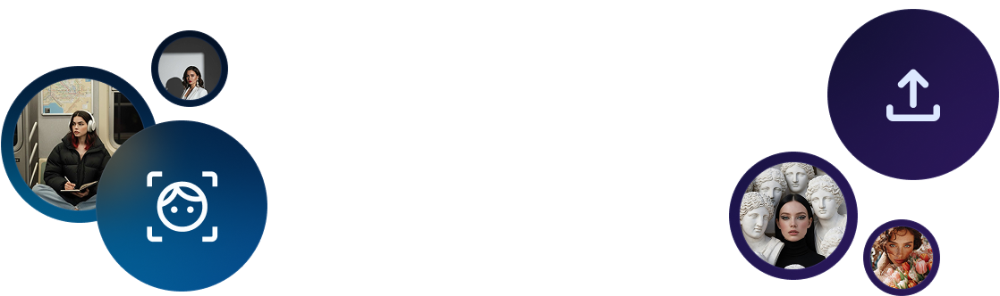
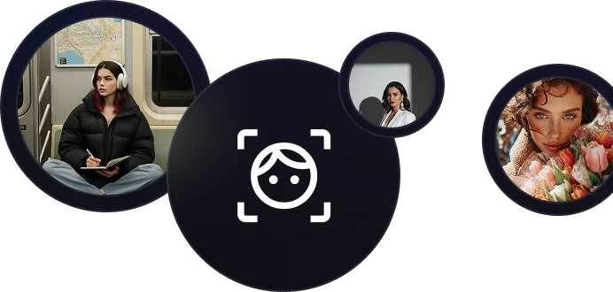
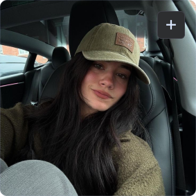
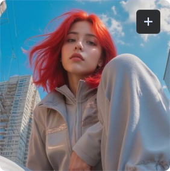
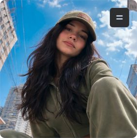

Создавайте AI-фотосессии из своих фото прямо в браузере
ИИ-фотосессия
за минуты
Примерьте 100 образов за один вечер.
От фото для паспорта до креативного снимка

Всё, что нужно для фото:
вы и ваша идея
Загрузите селфи, выберите стиль, добавьте свои пожелания,
а нейросеть сделает остальное


Используй моё лицо и мою внешность с предоставленного селфи. Создай изображение в стиле уличной fashion-фотографии. Сохрани реалистичную детализацию, цвет кожи и мой оригинальный цвет волос

Для новой аватарки
Для работы
Для соц.сетей
Для личного блога
Популярные идеи
для фотосессий
Праздничное настроение, брутальная эстетика или пинтерест-шик?
Посмотрите, какие стили сейчас в тренде!
Ещё больше идей
Не нашли подходящий вариант? Создайте свой!
Опишите любую локацию, наряд, сюжет или атмосферу